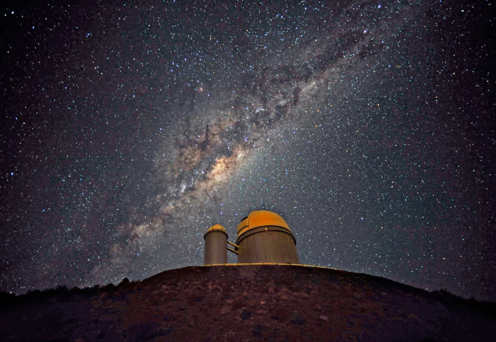
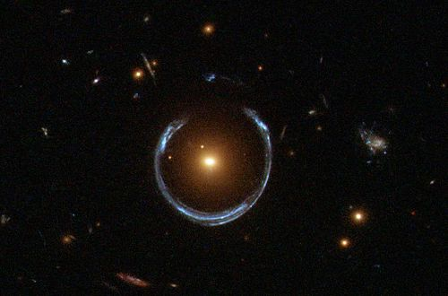
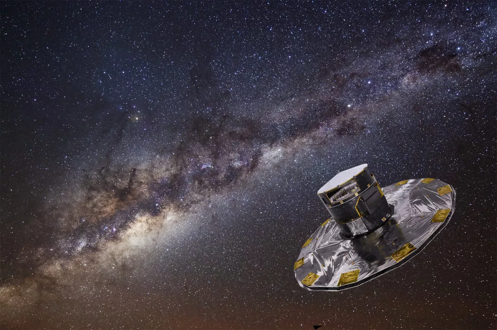

Radial velocity was the first successful method for the detection of exoplanets, and is responsible for identifying hundreds of faraway worlds. It is ideal for ground-based telescopes because (unlike for transit photometry) stars do not need to be monitored continuously. It doesn't require space-based telescopes or even the largest professional telescopes; the Isaac Newton telescope has a 2.5-meter primary mirror.
Most known exoplanets have been discovered using the transit method. A transit occurs when a planet passes between a star and its observer. Transits within our solar system can be observed from Earth when Venus or Mercury travel between us and the Sun. Transits reveal an exoplanet not because we directly see it from many light-years away, but because the planet passing in front of its star ever so slightly dims its light. This dimming can be seen in light curves – graphs showing light received over a period of time. When the exoplanet passes in front of the star, the light curve will show a dip in brightness. This data is part of why transits are so useful: Transits can help determine a variety of different exoplanet characteristics. The size of the exoplanet’s orbit can be calculated from how long it takes to orbit once (the period), and the size of the planet itself can be calculated based on how much the star’s brightness lowered. We can also learn about an exoplanet’s atmosphere during a transit. As it transits, some light will go through its atmosphere and that light can be analyzed to determine what different atmospheric elements influenced its particular dispersion. Atmospheric composition is important to determining habitability. Habitability can be further shown through orbital size and star temperature. These help determine the temperature of the planet itself, thus telling us whether its surface is a comfortable temperature or unsuitable for life.
Roman will demonstrate direct imaging technology by observing worlds that are Jupiter’s size circling Sun-like stars, and imaging planets that are up to several billion years old – something that has never been done before. These results will pave the way for future missions to study worlds that are even more Earth-like.
Gravitational microlensing relies on chance events where from our viewpoint, one star passes in front of another star. The farther star is usually a bright star, and the near one is normally one we couldn't ordinarily see from Earth. When it passes in front of the farther star, however, its gravity causes the light from the farther star to bend and the star is magnified from our point of view. If, during the event, the background star appears to be magnified even more for a short time, that means a planet orbiting the smaller star is increasing the effect of the magnification.
Astrometry is the science (and art!) of precision measurement of stars' locations in the sky. When planet hunters use astrometry, they look for a minute but regular wobble in a star's position compared to the positions of other stars. If such a periodic shift is detected, it is almost certain that the star is being orbited by an unseen companion planet.
